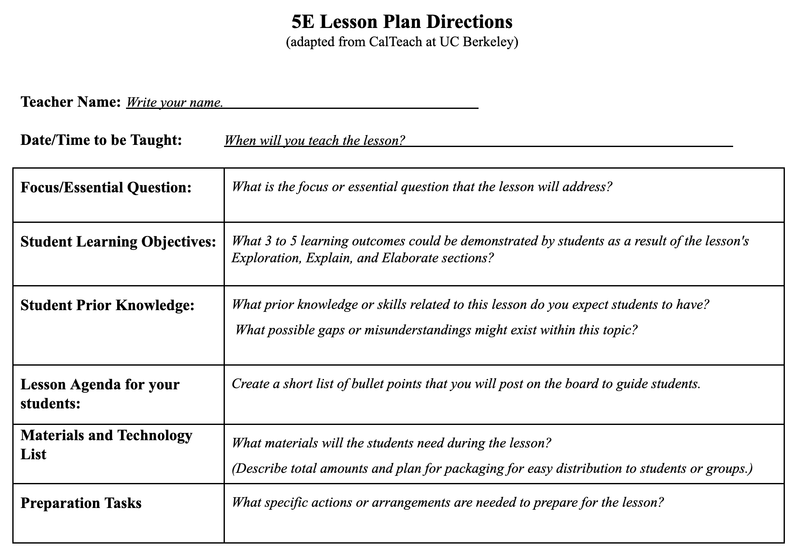
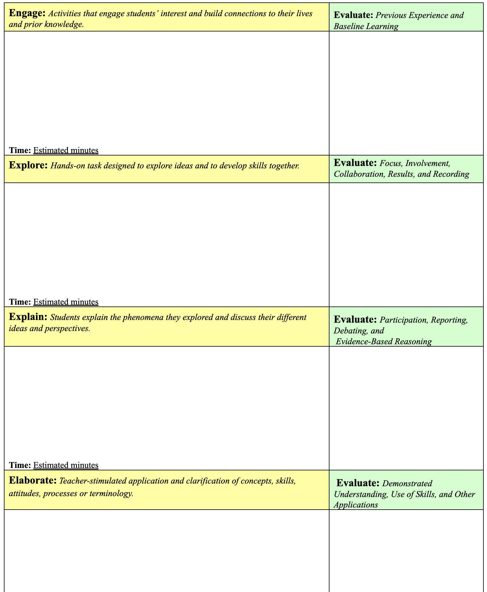
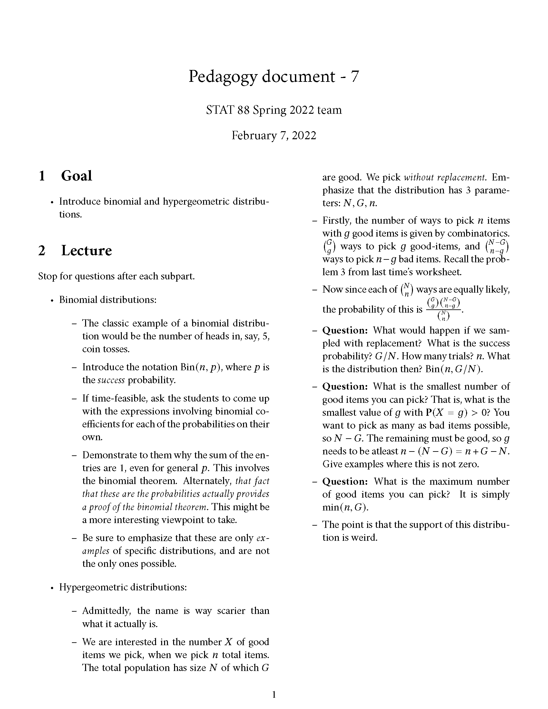
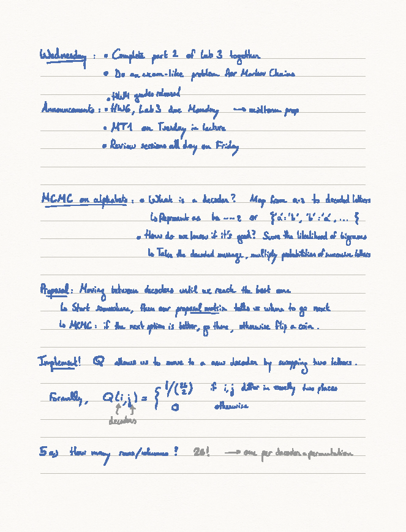
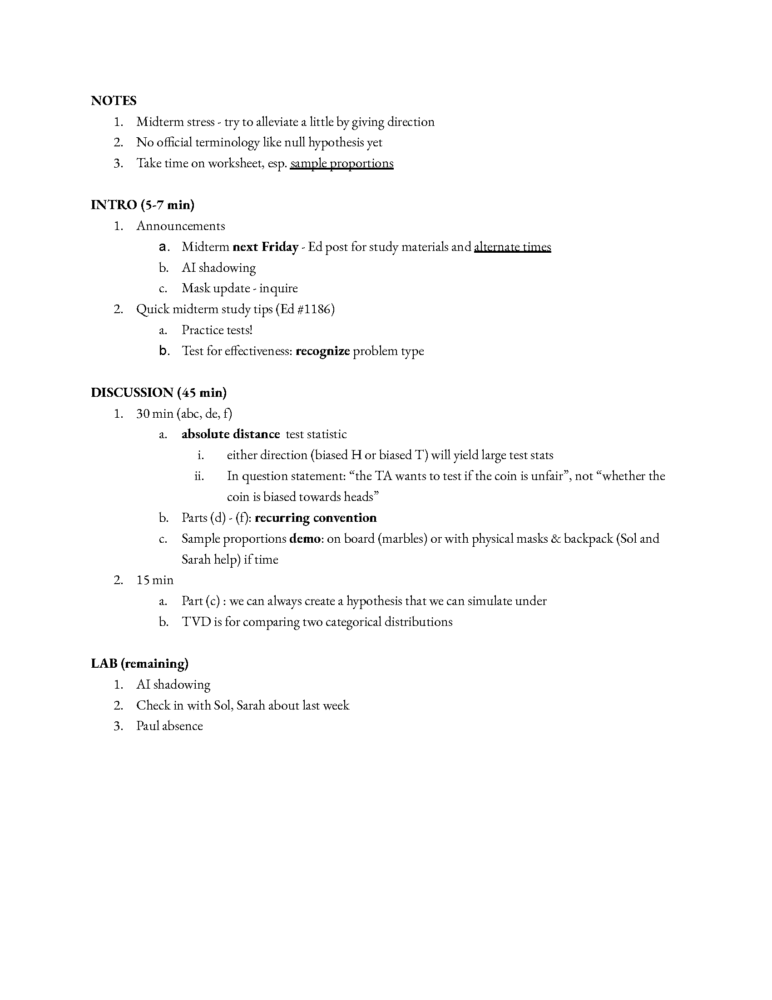
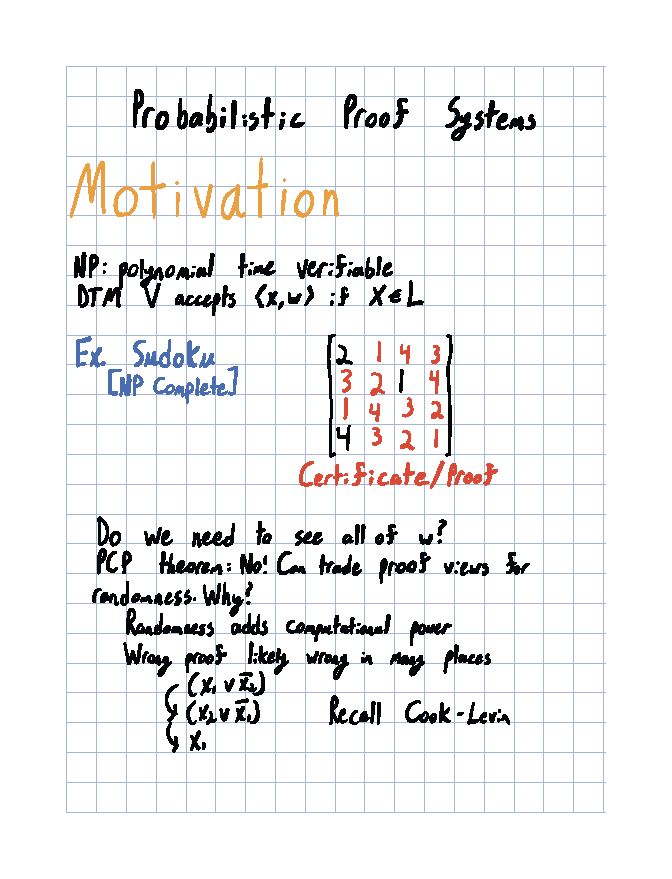

10:00
Lesson Planning
STAT 375 UC Berkeley
Agenda
- Reflections from teaching
- Finishing up Active Learning lesson
- A method for reflective teaching
- Practice: the 5E learning cycle
- Lesson plan examples from Cal
Reflections from teaching
Reflections from teaching
In your groups, take turns sharing:
- One thing that went well
- One thing that went poorly
- One thing you learned
Finishing Active Learning Lesson
Peer Instruction (Mazur, 1997)
Peer Instruction Protocol
Context: provide new model/language for familiar phenomenon.
Question: calibrated to be in the sweet spot of challenging but not too challenging.
Poll (1 min): students wrestle individually, commit to answer, prepare to explain.
Discuss (4 min): explaining can air misunderstanding, peers can be good teachers.
Re-poll (30 sec) : groups commits to answer, prepares to explain, feedback to instructor.
Share: air common misunderstandings.
Explain: resolve tension in conflicting answers.
Active learning protocols
Peer Instruction (Mazur, 1997)
Think-Pair-Share
Think-Pair-Share Protocol
Think: give students ~1 minute to consider the question and articulate their thinking (usually in writing).
Pair: students take turns explaining their thinking to a peer.
Share: pairs share their thinking with the class to air correct and incorrect conceptions.
Example: Teaching as a Team: Poorly
Consider a specific aspect of or incident in your working relationship with your teaching team that has gone poorly or could be improved
- Think: write a short description on the padlet.
- Pair: share your experience with a partner and discuss.
- Share: whole class discussion.
Example: Critiquing the evidence
- Think: Take a moment to write down three critiques of this line of evidence, or three questions that you have about its efficacy.
- Pair: Discuss your critiques with a neighbor.
- Share: Share your discussion with the class.
Think-Pair-Share Protocol
Think: give students ~1 minute to consider the question and articulate their thinking (usually in writing).
Pair: students take turns explaining their thinking to a peer.
Share: pairs share their thinking with the class to air correct and incorrect conceptions.
How can this fail?
Active learning protocols
Peer Instruction (Mazur, 1997)
Think-pair-share
Purposeful pause
Purposeful pause
Instructor pauses every ~15 minutes during lecture and asks students to:
Take a couple of minutes to summarize in writing what they just learned and jot down any questions or confusions or.
Turn to a neighbor and discuss and rework their notes in pairs, including identifying questions or confusions.
Active learning protocols
Peer Instruction (Mazur, 1997)
Think-pair-share
Purposeful pause
Quick writes
Quick writes
Instructor poses a prompt that students respond to in writing for ~5 minutes or less.
prompt might be a conceptual question, or metacognitive/reflective(link is external) question, including asking students to identify the most important takeaway or a point of confusion.
can be implemented at many points during a lecture, combined with small- or large-group discussion, and may be collected to inform future class sessions
if graded, points are typically awarded for completion/participation.
Discussion Sections
Most discussion sections at Cal take some version of the form:
- GSI gives Mini-Lecture
- Students work on practice problems
- GSIs go over answers
As a GSI and as a student, please think through at least two ways that you’ve seen step 2 fail. Enter your response on the padlet linked at bit.ly/3pxnBeQ.
Traps and how to avoid them
In groups of 4, discuss each of the failure modes and brainstorm a 2 - 5 methods that can be used to avoid them or short-circuit them when they occur. Designate one of your group members to take notes and another as the spokesperson.
08:00

A Method for Reflective Teaching
A Method for Reflective Teaching

You are tasked with teaching someone else how to make a peanut butter and jelly sandwhich
How would you start? What would you do first?
01:00
Please contribute your answer at pollev.com/andrewbray088.
Evan-Amos, Public domain, via Wikimedia Commons
Breaking it down
Think about the last class session you taught.
- Identify the distinct pieces of this session (e.g. gave a quiz, mini-lecture on topic X, review solution to problem Y)
- Record each of these pieces on a post-it note and lay them out in front of you in the order they were taught.
Example

Breaking it down
Think about the last class session you taught.
- Identify the distinct pieces of this session (e.g. gave a quiz, mini-lecture on topic X, review solution to problem Y)
- Record each of these pieces on a post-it note and lay them out in front of you in the order they were taught.
05:00
If learning is about changing the brain, then students …
- must be awake, attending, and interested.
- need to activate related knowledg/memories/circuits so they can connect these to new understandings.
- are only then likely ready for constructing new knowledge/circuits.
- need opportunities to practice using new ideas in new contexts.
- need opportunities to self-assess their understanding and identify confusions.
One Method: the 5E Learning Cycle Model
- Engage
- Explore
- Explain
- Elaborate
- Evaluate
If learning is about changing the brain, then students …
- Engage: must be awake, attending, and interested.
- Explore: need to activate related knowledge/memories/circuits so they can connect these to new understandings.
- Explain: are only then likely ready for constructing new knowledge/circuits.
- Elaborate: need opportunities to practice using new ideas in new contexts.
- Evaluate: need opportunities to self-assess their understanding and identify confusions.
In pairs, take turns sharing each piece of your lesson and classifying them by their E.
05:00
Planning with 5E Learning Cycle Model


Planning with 5E
This is your chance to practice rebuilding your lesson using this particular planning structure.
In pairs, work to fill out both pages to redesign one person’s lesson according to the 5E framework. After 15 minutes, switch over and redesign the other person’s lesson
30:00
Discussion
Questions
- Which components of the 5E cycle were most dominant in your lesson?
- Which component was the most difficult to fit in to your lesson?
- Most courses have several elements: lecture, lab, discussion, a class forum. Are there elements that are more natural fits for each component?
- What do you like about the 5E framework?
- What do you think is missing, misguided, or challenging about the 5E framework?
Lesson Plan Examples from Cal
Lesson Plan Examples from Cal

Lesson Plan Examples from Cal

Lesson Plan Examples from Cal

Lesson Plan Examples from Cal

Strategies inspired by the 5E model
Every GSI is operating within different constraints. Start small. Try changing just one thing.
Start your class with something that engages students and elicits prior knowledge. You could combine this with an icebreaker, check in question to keep it casual and make it a routine.
Allow for exploration before you explain or give mini-lectures. Spend time thinking about strategies to get students to collaborate and share their thoughts with others and the class.
Collect some form of assessment (informal is ok!) from your students every class. The middle of the semester is approaching (crazy!), that’s a natural time to send a feedback form.
References
This class session is adapted from:
Pickett, Sarah and Marisella Rodriguez. (July 7, 2021). What Comes First? How We Can (Re)Order What We Teach to Align with How People Learn. Center for Teaching and Learning, University of California, Berkeley. Campus-wide workshop.